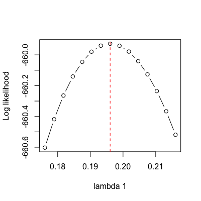

constrain(f, ..., formulae=NULL, names=argnames(f), extra=NULL) constrain.i(f, p, i.free)
...x. Use this only if
argnames does not return a vector for your function.
Generally this should not be used.argnames. This can be used to set up dummy variables
(example coming later).constrain.i) indicating values
for all parameters.p. The
element of p[i.free] will never be used and can be zero,
NA, or any other value.Constrain a model to make submodels with fewer parameters.
If f is a function that takes a vector x as its first
argument, this function returns a new function that takes a
shorter vector x with some elements constrained in some way;
parameters can be fixed to particular values, constrained to be the
same as other parameters, or arbitrary expressions of free
parameters.
The relationships are specified in the form target ~ rel, where
target is the name of a vector to be constrained, and
rel is some relationship. For example lambda0 ~ lambda1
would have the effect of making the parameters lambda0 and
lambda1 take the same value.
The rel term can be a constant (e.g., target ~ 0),
another parameter (as above) or some expression of the parameters
(e.g., lambda0 ~ 2 * lambda1 or
lambda0 ~ lambda1 - mu1).
Terms that appear on the right hand side of an expression may not be constrained in another expression, and no term may be constrained twice.
Only a few checks are done to ensure that the resulting function makes any sense; it is possible that I have missed some cases. There is currently no way of modifying constrained functions to remove the constraints. These weaknesses will be addressed in a future version.
This function returns a constrained function that can be passed
through to find.mle and mcmc. It will behave
like any other function. However, it has a modified class
attribute so that some methods will dispatch differently
(argnames, for example). All arguments in addition to x
will be passed through to the original function f.
For help in designing constrained models, the returned function has
an additional argument pars.only, when this is TRUE the
function will return a named vector of arguments rather than evaluate
the function (see Examples).
## Same example likelihood function as for \link{find.mle} - BiSSE on a ## tree with 203 species, generated with an asymmetry in the speciation ## rates. pars <- c(0.1, 0.2, 0.03, 0.03, 0.01, 0.01) set.seed(2) phy <- tree.bisse(pars, max.t=60, x0=0) lik <- make.bisse(phy, phy$tip.state) argnames(lik) # Canonical argument names[1] "lambda0" "lambda1" "mu0" "mu1" "q01" "q10"## Specify equal speciation rates lik.2 <- constrain(lik, lambda0 ~ lambda1) argnames(lik.2) # Note lambda0 now missing[1] "lambda1" "mu0" "mu1" "q01" "q10"## On constrained functions, use the "pars.only" argument to see what ## the full argument list would be: lik.2(c(.1, pars[3:6]), pars.only=TRUE)lambda0 lambda1 mu0 mu1 q01 q10 0.10 0.10 0.03 0.03 0.01 0.01## Check this works: lik(c(.1, .1, pars[3:6])) == lik.2(c(.1, pars[3:6]))[1] TRUE## For optimisation of these functions, see \link{find.mle}, which ## includes an example. ## More complicated; constrain lambda0 to half of lambda1, constrain mu0 ## to be the same mu1, and set q01 equal to zero. lik.3 <- constrain(lik, lambda0 ~ lambda1 / 2, mu0 ~ mu1, q01 ~ 0) argnames(lik.3) # lambda1, mu1, q10[1] "lambda1" "mu1" "q10"lik(c(.1, .2, .03, .03, 0, .01)) == lik.3(c(.2, .03, .01))[1] TRUE## Alternatively, coefficients can be specified using a list of ## constraints: cons <- list(lambda1 ~ lambda0, mu1 ~ mu0, q10 ~ q01) constrain(lik, formulae=cons)BiSSE likelihood function: * Parameter vector takes 3 elements: - lambda0, mu0, q01 * Function constrained (original took 6 elements): - lambda1 ~ lambda0 - mu1 ~ mu0 - q10 ~ q01 * Function takes arguments (with defaults) - pars: Parameter vector - ...: Additional arguments to underlying function - pars.only [FALSE]: Return full parameter vector? * Phylogeny with 203 tips and 202 nodes - Taxa: sp1, sp27, sp29, sp31, sp41, sp43, sp46, sp47, sp48, ... * References: - Maddison et al. (2007) doi:10.1080/10635150701607033 - FitzJohn et al. (2009) doi:10.1093/sysbio/syp067 R definition: function (pars, ..., pars.only = FALSE)## Using the "extra" argument allows recasting things to dummy ## parameters. Here both lambda0 and lambda1 are mapped to the ## parameter "lambda": lik.4 <- constrain(lik, lambda0 ~ lambda, lambda1 ~ lambda, extra="lambda") argnames(lik.4)[1] "lambda" "mu0" "mu1" "q01" "q10"## constrain.i can be useful for setting a number of values at once. ## Suppose we wanted to look at the shape of the likelihood surface with ## respect to one parameter around the ML point. For this tree, the ML ## point is approximately: p.ml <- c(0.09934, 0.19606, 0.02382, 0.03208, 0.01005, 0.00982) ## Leaving just lambda1 (which is parameter number 2) free: lik.l1 <- constrain.i(lik, p.ml, 2) ## The function now reports that five of the parameters are constrained, ## with one free (lambda1) lik.l1BiSSE likelihood function: * Parameter vector takes 1 elements: - lambda1 * Function constrained (original took 6 elements): - lambda0 ~ 0.09934 - mu0 ~ 0.02382 - mu1 ~ 0.03208 - q01 ~ 0.01005 - q10 ~ 0.00982 * Function takes arguments (with defaults) - pars: Parameter vector - ...: Additional arguments to underlying function - pars.only [FALSE]: Return full parameter vector? * Phylogeny with 203 tips and 202 nodes - Taxa: sp1, sp27, sp29, sp31, sp41, sp43, sp46, sp47, sp48, ... * References: - Maddison et al. (2007) doi:10.1080/10635150701607033 - FitzJohn et al. (2009) doi:10.1093/sysbio/syp067 R definition: function (pars, ..., pars.only = FALSE)## Likewise: argnames(lik.l1)[1] "lambda1"## Looking in the neighbourhood of the ML point, the likelihood surface ## is approximately quadratic: pp <- seq(p.ml[2] - .02, p.ml[2] + .02, length.out=15) yy <- sapply(pp, lik.l1) plot(yy ~ pp, type="b", xlab="lambda 1", ylab="Log likelihood")abline(v=p.ml[2], col="red", lty=2)
## pars.only works as above, returning the full parameter vector lik.l1(p.ml[2], pars.only=TRUE)[1] 0.09934 0.19606 0.02382 0.03208 0.01005 0.00982identical(p.ml, lik.l1(p.ml[2], pars.only=TRUE))[1] TRUE